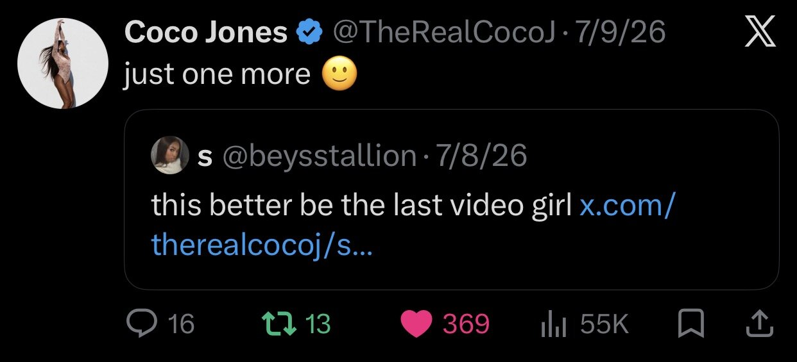

Highlight anything
Select text the same way you normally would on your phone. A light-lavender preview will appear. Tap the check to save it.
Meeting 001 · Page 1 of 7
Rollout Review
This is about the world around it..
Here we go (uh oh)
If I like something, it makes me want to understand it more. So when I look at things, it is not really me trying to pick it apart.
And I’m not trying to be your biggest music critic and tell you if I like a song or not, so that determines if it is good or bad...but I do like Body So Tea.
The fragmented rollout
When the first video dropped and it felt like you were being vulnerable and opening up to us and because you asked a question obvi there was discourse. The direction and sound you should lean into has always been a hot topic even before the video..and this just threw gasoline on the fire..
So when you put that question out there, the entire internet answered with their opinions (there were so many bad takes..omg!!) anyway, the video set an expectation that yes this is a journey, and that by the end of this… there would be an answer.
I mean yeah, the video was framed as we are on this journey with you like the co-captains are back on the boat with you finally!!...but
It didn’t really work like that...
Because it wasn’t meant to be a conversation. There was literally no engagement with your fans or the audience. People in your comments were genuinely trying to help and other artists were opening up and sharing their own struggles.
And there was no response to any of it.
Then the second video came.
It felt like a rollout.
The authenticity people thought they were getting started to feel staged, even if the convo you had was real.
The other side of it
I literally watched the disconnect happen in real time. and it came from how everything was being presented to us.
Because the way everything is framed, everything feels like a decision. So the audience has it in their minds that oh, this is the direction she’s taking, because of the question you asked in video one. So instead of them following your journey, it feels like stop her before she stops making the music we like!
They no longer cared about the new song because it was already framed as a different sound than what you gave us before.
And that’s where the disconnect really is... well one of them.
Fan Fatigue
This is when I really noticed that the rollout was a mess. Well, I been knew it was since video one but anyywayy..
Not just to casual listeners, but your fanbase became passive.
instead of it being “yay, Coco posted,”
it became:
check the notification…
sigh
it’s one of those videos.
To the point where in the last video, there was a snippet people completely missed. And that’s why I said something about it on Twitter. bc like… dang, y’all aren’t even watching these all the way through anymore.
Literally, the reactions were:
I love her.
I support her.
I fr want this era to end now.
Or it was just:
I liked it.
I retweeted it.
and I closed the app.
I feel like that lets you know how this connected with your Co-Captains.
When one said,
“this better be the last video girl”
that is literally how the fans were feeling.

The Wrong Conversation
Body So Tea did not need the level of depth that the rollout gave it. Not AT ALL...
The rollout was asking people to think about your identity, your musical direction, and your future as an artist..
The song is a summer bop.
Mind you, those are two completely different conversations.
BST did not need to carry the answer of explaining your full artistic identity.

The Paid Campaign
What was the source?
Literally, videos were being spammed everywhere from accounts just made days ago and some new fan accounts dedicated to BST.
People were being given videos and instructions on how to frame them. It told them to make the clips feel like a documentary about an artist at a crossroads. It pushed the conversations about the label, the doubt, finding a new sound, stepping into a new era and connecting all of that back to Body So Tea. Evidence below.
I understand that I am not in the rooms where these decisions are being made, but this is another one where I genuinely cannot make myself understand the why. I don’t think that was the right strategy for this rollout at all.
And because the payment was based on views, of course people were going to keep spamming clips in hopes one would pick up. It did not really push the convo anywhere, Everyone was still stuck on video one. even though all the videos were out. so they got paid just to spam with no results.
Oops, let me mention the week Two campaign files. I recognized the downloader filename because it was the same one I used. I found the clip on IG posted it on twitter, but they recruited that clip in the paid campaign not even from the actual IG person that was there at the Don Julio performance..
I had a fun idea I wanted to create for Body So Tea fan engagement, but after finding the campaign and seeing how everything was being pushed, the fan fatigue lowkey hit me too... I was really trying to push through with the rollout.
Now it is like:
Yeah. Y’all got this.
Not saying that you need me for anything, but anyway...
✧ I am throwing my hands up lol ✧
I’m not asking your personal stance on AI... But the common assumption is that artists would be against generative AI because they want to protect their own image, voice, and likeness.
And some of these accounts were creating AI images of you for this rollout. I personally do not think that was needed.
When there was a little commotion when AI was used during the Christmas rollout, I shamelessly blamed the team for that so people can back off LMAO.
But anyway, back on track... I am saying this to say somebody messier could have found this and turned it into a big issue.
“Coco Jones is paying people to post her clips lol.”
“Coco Jones is paying people to use AI images for her rollout.”
It never stays the fault of the label or marketing team who paid for this... It becomes your name.
They drag Coco Jones, even if paid campaigns are a normal strategy labels use, even if you are not the one planning these rollouts..
I have no problem with paid campaigns.. but because this specific one kept spamming, added AI images that were not needed, and created a chance for your name to get dragged if the wrong person found it first... I hate it.
What Could Have Been
I don't think this was a bad idea. I just don't think Body So Tea was the song for this.
Because now the song has to carry this whole conversation about your career, your direction, your sound... and I just don't think those two things matched at all, no shade.
To me, Body So Tea should've just been allowed to be fun!! It is literally a summer bop!
Show us hearing the song for the first time. Show us you recording it. Talk about why you liked it. Talk about changing the verses. Show behind the scenes from the photoshoots and videos.
Do your GRWM's using the song before it comes out.
Use it as background music instead of always presenting it as, “Hey y’all, here’s my new single.”
I still think you can turn this around. The stuff you've been posting after the song came out is the vibe this needed.
That's the world I wish we would've gotten from the beginning. Because that feels like Body So Tea.
The documentary idea is still good. I actually think it could be really cool for CJ2.
Just film throughout the whole process, not just studio and business talks. Do everything. Then when everything is over, YOU look back and tell the story you want to present to the world.
Not just from your perspective, but from ours too. How did the fans feel? Oh, they weren’t feeling this? What worked? Why? How?
I think that would’ve been really cool to come with CJ2.